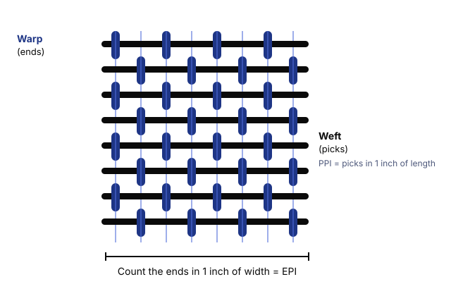

You can estimate the weight of a woven fabric before it is woven. If you know the yarn count, the ends per inch (EPI), the picks per inch (PPI) and the crimp, a short formula returns grams per square metre (GSM). This guide shows the formula, derives it so you can trust it, and works through examples — including one where a widely copied online example is off.
The GSM formula for woven fabric
Here Ne is the English (cotton) yarn count and crimp is expressed as a decimal (6% = 0.06). You will also see this written as (EPI/warp count + PPI/weft count) × (100 + crimp %) × 0.2327 (Online Clothing Study) — the same relationship, with 0.2327 = 23.25 ÷ 100 when warp and weft crimp are equal. Some sources use 23.5 with fixed crimp factors of 1.1 and 1.04 instead.
Where 23.25 comes from
The constant is not magic; it is unit conversion. Ne counts how many 840-yard hanks weigh one pound. For one square metre of fabric:
- One metre of width holds EPI × 39.37 ends (there are 39.37 inches in a metre).
- Each end is 1 metre long in the fabric, but longer as yarn because of crimp: length = 1 × (1 + crimp) metres.
- Convert metres to yards (÷ 0.9144), then to weight: yards ÷ (840 × Ne) gives pounds; × 453.592 gives grams.
Combining the constants: 39.37 ÷ 0.9144 × 453.592 ÷ 840 = 23.25. The weft is the same calculation with PPI. This derivation also shows where the formula breaks: it assumes the yarn count is the actual spun count and that crimp is right.
Worked examples
Example 1: 40s × 40s, 120 × 60, 6% crimp
Example 2: 30s × 30s, 80 × 64, warp crimp 8%, weft crimp 4% (illustrative values)
Example 3: 2/40 warp, 20s weft, 84 × 64, crimp 6% / 4% (illustrative values)
A plied yarn is converted to its effective count by dividing by the number of plies: 2/40 behaves as 20 Ne. This construction pattern (2/40 PV warp, 20s PV weft, 84 × 64) appears in a published PV specification (Fibre2Fashion); the crimp values here are assumptions for illustration, since real crimp depends on weave and finishing.
Measuring GSM directly
A formula gives an estimate. For a real fabric, measure it. With a circular GSM cutter that cuts a 100 cm² disc, weigh the disc in grams and multiply by 100. Test standards such as ISO 3801 define how mass per unit area of woven fabric is determined (it appears in the normative references of DEAS 1141-3). If your buyer's specification names a standard, test to that standard in conditioned conditions.

Loom-state vs finished GSM
The formula uses the construction you feed it. EPI and PPI measured on the loom differ from the finished values because finishing changes width and length and therefore the thread count per inch. Weight also changes with finishing processes. When comparing a quoted GSM with your own calculation, ask whether the number refers to greige or finished cloth. Our guides on greige vs finished fabric and finishing and price explain why the two differ.
Other yarn count systems
If the count is given in tex rather than Ne, convert first: tex = 590.5 ÷ Ne. (That constant follows from the same pound-and-hank definitions: 453.592 g ÷ (840 × 0.9144 m) × 1000.) Denier-based yarns need a separate conversion. Our explainer on yarn count covers the systems in more detail.
Converting oz/yd² to GSM
One ounce per square yard equals 33.906 grams per square metre (28.3495 g ÷ 0.83613 m²).
| oz/yd² | GSM (approx.) |
|---|---|
| 4 | 136 |
| 6 | 203 |
| 8 | 271 |
| 10 | 339 |
Using GSM in costing and sourcing
GSM links directly to cost, because more grams per square metre means more yarn. Pair it with width when comparing offers: see GSM and width: how they change cost per metre and how fabric is priced. The caution from our explainer on GSM still applies: the same GSM can feel very different on the body.
Frequently asked questions
Can I calculate GSM from EPI and PPI alone?
No. Yarn count must be part of the calculation, because the same thread density in a coarser yarn gives a heavier fabric than in a finer yarn.
What is a typical crimp percentage?
It varies with weave, yarn, density and finishing. Online examples use values from about 4% to 10% for warp and lower for weft; treat any value as an assumption and measure crimp on a real sample where accuracy matters.
Why does my calculated GSM not match the lab result?
Common reasons are wrong crimp assumptions, count variation, loom-state vs finished measurements, and finishing shrinkage. A GSM estimate is for planning, not acceptance.
How do I convert GSM to oz/yd²?
Divide GSM by 33.906. For example, 271 GSM ÷ 33.906 ≈ 8 oz/yd².
Does the formula work for blends like PV?
Yes, as long as the yarn count is expressed in Ne. Blend ratio changes yarn behaviour but the count-based formula is the same.
Conclusion
GSM from construction is a four-input calculation: EPI, PPI, yarn count and crimp. Know where the constant comes from, apply crimp explicitly, and confirm with a measured result before committing to a bulk order.
Related reading
Sources
- Online Clothing Study — determining GSM of woven fabric from construction
- Textile Trainer — fabric GSM calculation exercises
- Fibre2Fashion — sample PV 65/35 constructions (count, EPI×PPI, weave)
- DEAS 1141-3 (East African draft standard) — lists ISO 3801, 5077, 12945-2, 12947-2
Figures marked as estimates or illustrations are calculated or invented for explanation; they are not test results or specifications for any ENZO fabric. Source pages were reviewed in November 2026. This article is general information, not legal, customs or financial advice.